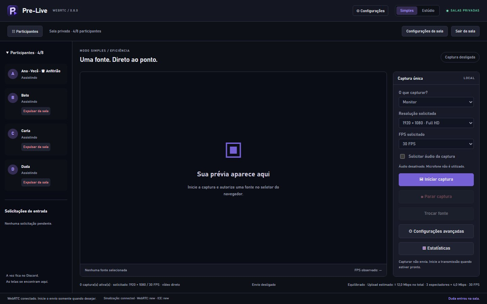
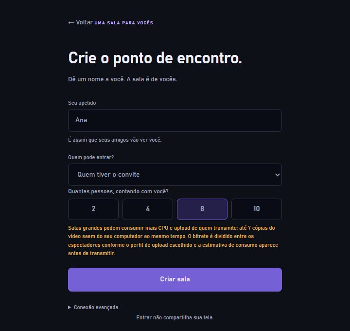
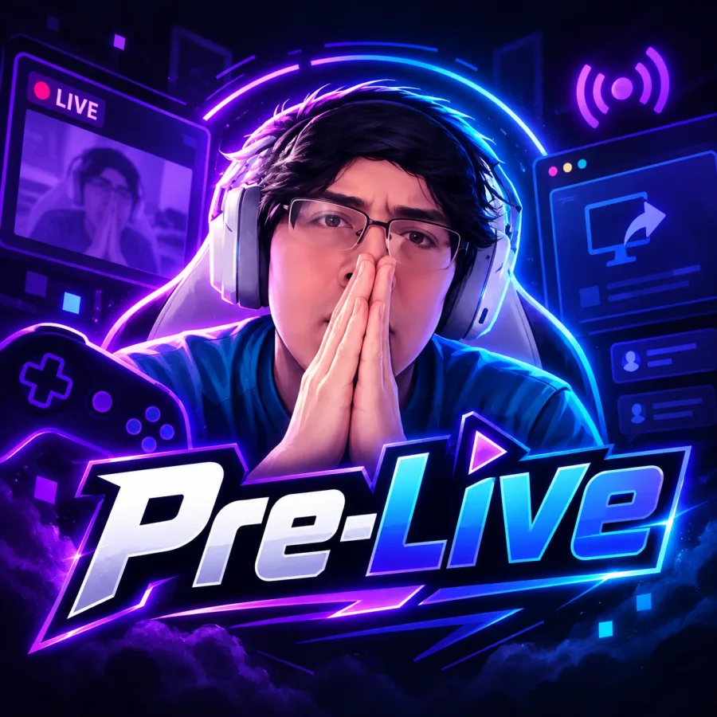
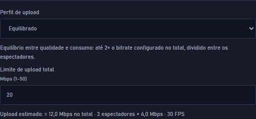

Pre-Live para Windows
Compartilhe sua tela. O resto é com vocês.
Crie uma sala privada, convide seus amigos e compartilhe seus jogos, vídeos ou o que estiver acontecendo no seu PC.

Como funciona
Uma sala, um convite, uma tela.
Você não precisa de conta. A voz continua onde já está: no Discord. O Pre-Live só cuida da imagem.
Crie a sala
Escolha um apelido, quem pode entrar (qualquer pessoa com o convite, só com a sua aprovação ou ninguém por enquanto) e quantas pessoas cabem: 2, 4, 8 ou 10, contando com você.
Mande o convite
O convite é um link com prazo de validade. Você pode renová-lo, revogá-lo ou tirar alguém da sala quando quiser; quem foi removido não volta com o link antigo.
Escolha o que mostrar
Monitor ou janela. O próprio Windows pergunta o que compartilhar, e nada sai do seu PC até você clicar em iniciar o envio.

Você no controle
O que sai do seu PC é decisão sua.
- Captura só com consentimento. Entrar numa sala não compartilha nada. Capturar e enviar são dois passos separados, ambos explícitos.
- Parar é imediato. Parar o envio interrompe a transmissão; sair da sala encerra as capturas e todas as conexões.
- O vídeo não passa pelo servidor. A imagem segue direto de computador para computador (WebRTC). O servidor do Pre-Live só apresenta os participantes uns aos outros e não recebe imagem.
- Sem integração com o Discord. Nada é lido, controlado ou automatizado lá. Cada ferramenta faz a sua parte.

Salas de até 10 pessoas
Uma pessoa transmite. Todas as outras assistem.
Cada espectador recebe uma cópia própria do vídeo, enviada pelo computador de quem transmite. Por isso o upload cresce com o tamanho da sala, e o Pre-Live mostra a estimativa antes de você começar.
- Perfis de upload. Econômico, Equilibrado (o padrão) e Qualidade. O consumo nunca aumenta sozinho.
- Limite seguro por espectador. Com banda curta, o Pre-Live reduz a imagem e mantém 30 quadros por segundo em vez de tentar 1080p a 60 FPS para todo mundo e travar.
- Anfitrião administra. Só quem criou a sala muda o limite de pessoas, aprova entradas ou expulsa. Quando a sala enche, quem tenta entrar vê uma mensagem clara.

Em teste com amigos. O Pre-Live é novo. A lógica das salas e do vídeo foi testada com várias conexões no mesmo computador. Conexões entre casas diferentes ainda estão sendo validadas, e algumas redes (como CGNAT ou redes de empresa) podem não conectar, porque ainda não há servidor de retransmissão. O instalador também não é assinado digitalmente.
Detalhes e o que fazer se não conectar estão nas dúvidas e na página de download.
Pronto para criar a primeira sala?
Instalação só para o seu usuário, sem precisar de administrador.